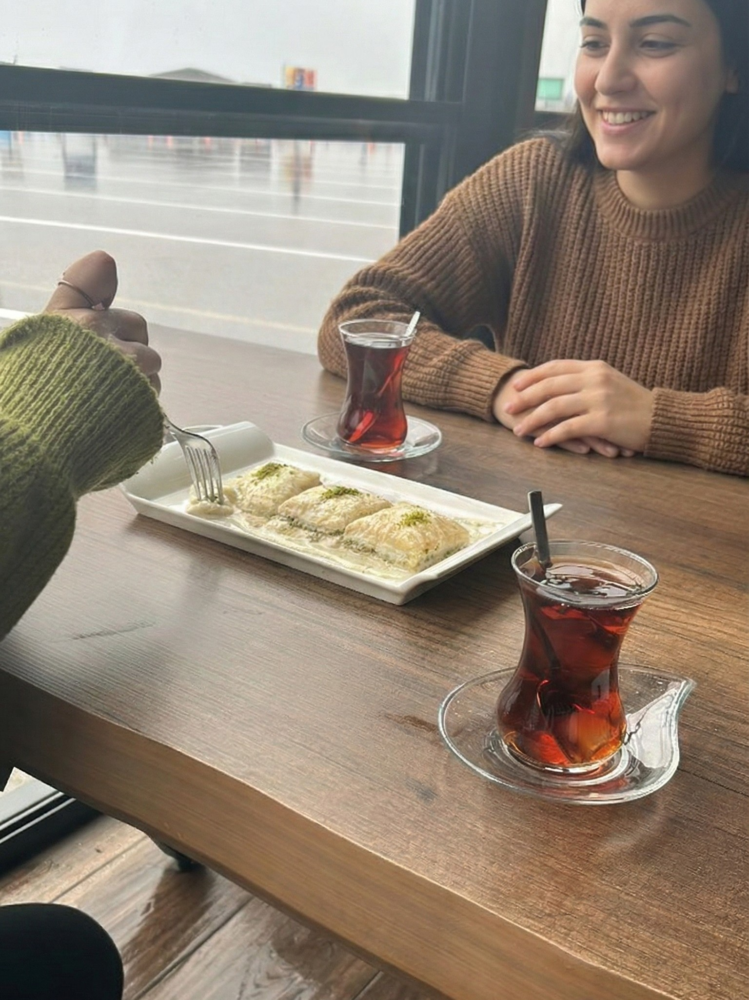
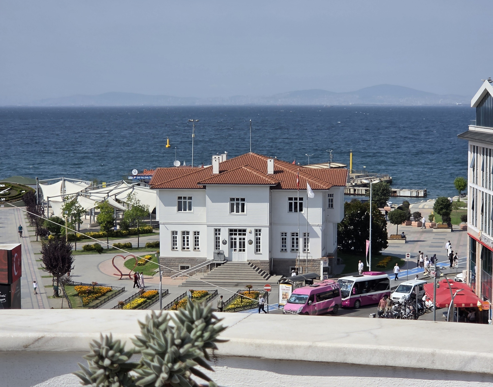

Yalova Photo Gallery
A visual journey through the historical, natural, and cultural beauties of Yalova.

The Walking Mansion

Thermal Hot Springs

Sudüşen Waterfall

Karaca Arboretum

Çınarcık Beach

City Museum

Yalova Sütlüsü (Dessert)

Termal Sarma (Food)

Fishermen & Coast